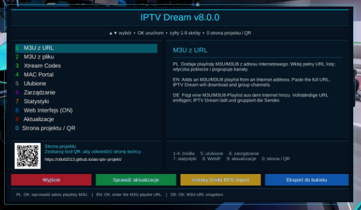

Witam na mojej stronie Paweł Pawełek
Duża aktualizacja projektu • 14.08.2026
🚀 IPTV Dream v8.0.0
Największa przebudowa IPTV Dream od wydania 7.0.0. Wersja 8.0.0 porządkuje rdzeń wtyczki, poprawia stabilność oraz eksport M3U/Xtream/MAC, oczyszcza nazwy bukietów i kanałów, usprawnia EPG i picony, poprawia WebIF i wprowadza nowy interfejs inspirowany AIO Panel.

Obsługiwane źródła i funkcje
- M3U / M3U8 z adresu URL i z lokalnego pliku
- Xtream Codes
- MAC Portal / Stalker / MAG / eStalker
- LIVE, VOD i rozdzielanie treści według kategorii
- eksport do bukietów Enigma2
- EPG oraz picony
- Web Interface
- ulubione, historia, statystyki, cache i zarządzanie źródłami
- aktualizacja z poziomu wtyczki
Plik i zgodność
Wersja: 8.0.0
Data wydania: 14.08.2026
Plik: enigma2-plugin-extensions-iptvdream_8.0.0_all.ipk — 380 KB
SHA-256: 103350b99de67dcd002081bac47d38474beca42c5687c04fd665ed9f98878bc3
Pakiet: Enigma2 / Python 3.
Zależności IPK: enigma2, python3-requests, python3-twisted; zalecany python3-twisted-web.
Autor: Paweł Pawełek
🔧 Stabilność i przebudowa rdzenia
- przeprowadzono pełny audyt kodu wtyczki i uporządkowano stare, równoległe moduły
- ograniczono ryzyko błędów podczas importowania nieużywanych części wtyczki
- poprawiono obsługę wyjątków, timeoutów i anulowanych operacji
- zabezpieczono zapis konfiguracji, historii, statystyk i cache
- uporządkowano elementy kodu pod kątem zgodności między środowiskami Python 2 / Python 3
- poprawiono zgodność z różnymi image Enigma2
- poprawiono instalator i aktualizator, walidację nowej wersji oraz możliwość przywrócenia poprzednich plików po nieudanej aktualizacji
python3-*, dlatego ta paczka jest przeznaczona dla systemów Enigma2 z Pythonem 3.📡 M3U / M3U8
- przebudowany parser playlist i lepsze rozpoznawanie struktury listy
- poprawiona obsługa
group-title,tvg-id,tvg-nameitvg-logo - poprawione nazwy zawierające przecinki
- lepszy podział LIVE, VOD i Adult
- obsługa lokalnych plików M3U/M3U8 i list pobieranych bezpośrednio z URL
- poprawniejsze tworzenie bukietów na podstawie kategorii źródłowych
🔑 Xtream Codes oraz MAC / Stalker Portal
Xtream Codes
- prawidłowe kodowanie loginu i hasła, również ze znakami specjalnymi
- poprawione generowanie adresów strumieni
- lepsza obsługa kategorii i rozdzielanie LIVE / VOD / pozostałych treści
- poprawiony eksport do Enigma2
MAC / Stalker / MAG
- lepsze przetwarzanie nazw grup i kanałów
- poprawione adresy strumieni oraz dane portalu
- czytelniejsze i bezpieczniejsze tworzenie eksportowanych bukietów
📂 Czyste nazwy bukietów i kanałów
W 8.0.0 nazwa serwera, portalu, loginu lub źródła nie jest już dopisywana do widocznej nazwy bukietu. Informacja o źródle może pozostać używana wewnętrznie do rozróżnienia plików, aby różne listy nie nadpisywały się wzajemnie.
Przykład bukietu
MAC-line.tvdsz.cc_xxxxx-LIVE - |DE| MAGENTA HD
→ MAGENTA HD
Przykłady kanałów
|DE| HOPE TV → HOPE TV[PL] TVP 1 HD → TVP 1 HDUK - BBC ONE → BBC ONE
Usuwane są typowe oznaczenia państw, flagi i techniczne przedrostki. Jednocześnie zachowywane są prawidłowe elementy nazw, takie jak HD, FHD, UHD, 4K, CANAL+ i TV.
🖼 Picony i 📅 EPG
Picony
- bezpieczniejsza normalizacja nazw używana przy dopasowaniu piconów
- ograniczenie zbyt agresywnego usuwania fragmentów nazw
- lepsza obsługa nazw takich jak CANAL+, TV PULS i CHANNEL
EPG
- poprawione generowanie mapowania EPGImport
- wykorzystanie
tvg-idi poprawiona normalizacja nazw - VOD nie jest mapowane jak zwykłe kanały TV
- poprawiona obsługa źródeł XML / XML.GZ oraz generowanie plików XML
- lepsze dopasowanie po usunięciu prefiksów krajowych
🎬 Eksport bukietów Enigma2
- prawidłowe kodowanie adresu strumienia w
#SERVICE - poprawiona obsługa adresów zawierających port i parametry URL
- zachowanie wybranego typu serwisu
- obsługa 4097 oraz 5002 / ServiceApp
- czyste nazwy bukietów i kanałów
- poprawiona integracja z EPG i piconami
- naprawiono sytuację, w której ustawienie 4097/5002 było zapisywane, ale nie zawsze używane podczas eksportu
🌐 WebIF, cache i zarządzanie
- WebIF nie powinien blokować uruchomienia całej wtyczki, jeśli brakuje części zależności
- poprawiono wykrywanie rzeczywistego stanu serwera i usunięto fałszywy komunikat „ON”, gdy port nie został uruchomiony
- uporządkowano informacje o projekcie
- naprawiono mechanizm czyszczenia cache tak, aby usuwał katalog faktycznie używany przez aktualny loader playlist
- poprawiono historię, statystyki, konfigurację, pliki tymczasowe, zarządzanie źródłami i usuwanie zapisanych danych
🎨 Nowy interfejs IPTV Dream 8.0.0
- ciemna granatowa kolorystyka i niebiesko-cyjanowe akcenty spójne z AIO Panel
- menu po lewej stronie i informacje o wybranej funkcji po prawej
- uporządkowany nagłówek oraz czytelniejsze przyciski funkcyjne
- układ przygotowany dla rozdzielczości 1280×720
- dynamiczne podpowiedzi opisujące działanie zaznaczonej funkcji
- podpowiedzi w wielu językach, m.in. polskim, angielskim, niemieckim, hiszpańskim, arabskim i rosyjskim
🌐 Strona projektu i kod QR
Usunięto informację o starej grupie Facebook. Wtyczka kieruje bezpośrednio na oficjalną stronę projektu:
https://olioli2013.github.io/aio-iptv-projekt/
- dodano czytelny kod QR prowadzący do strony projektu
- poprawiono wyświetlanie całego kodu QR w Enigma2
- dodano osobny ekran z dużym kodem QR
- na ekranie głównym dostępna jest opcja 0 – Strona projektu / QR
🛠 Dodatkowe poprawki
- naprawiono błędne użycie
ProgressBar.setRange() - poprawiono nieistniejące grafiki przycisków w jednym z ekranów Xtream
- naprawiono błędne ścieżki cache i niekompletne akcje nawigacji grup playlist
- uporządkowano stare importy w
tools/__init__.py - usunięto błędy ujawniające się tylko na wybranych image Enigma2
Zdjęcie / podgląd
Instalacja i aktualizacja
IPTV Dream v8.0.0 można zainstalować z pliku IPK, bezpośrednio z GitHuba albo z poziomu AIO Panel. Po instalacji wykonaj Restart GUI.
wget -q -O - https://raw.githubusercontent.com/OliOli2013/IPTV-Dream-Plugin/main/installer.sh | /bin/shPo zakończeniu instalacji wykonaj Restart GUI.
wget -q -O - --user-agent="Enigma2" -4 https://raw.githubusercontent.com/OliOli2013/IPTV-Dream-Plugin/main/installer.sh | /bin/shInstalacja pobranego IPK przez FTP
Wgraj plik IPK do katalogu /tmp, a następnie wykonaj polecenie:
opkg install /tmp/enigma2-plugin-extensions-iptvdream_8.0.0_all.ipk